Campaña del Desierto
La conquista territorial, el despojo de los pueblos originarios y la consolidación del latifundio
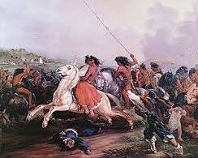
El proceso de organización nacional que se consolidó hacia la década de 1860 requería, según la visión de las élites de la época, la afirmación de la soberanía estatal sobre la totalidad del territorio cartográfico. La Patagonia y la región pampeana no eran, en términos reales, un «desierto», sino espacios habitados por sociedades complejas: mapuches, tehuelches, ranqueles y pampas, con estructuras políticas, económicas y culturales propias.
Antes de la gran ofensiva de 1879, la relación entre el Estado criollo y las naciones indígenas fluctuaba entre la negociación, el comercio y el conflicto esporádico. Durante el gobierno de Juan Manuel de Rosas se habían tejido alianzas con caciques poderosos como Calfucurá, con un sistema de convivencia basado en tratados de paz y el intercambio de ganado, sal y cueros que vinculaba incluso los mercados chilenos.
Hacia la década de 1870, la invención de la máquina frigorífica y la demanda europea de carne y lana elevaron el valor de la tierra fértil, transformando la posición del Estado. Bajo la presidencia de Nicolás Avellaneda, el ministro Adolfo Alsina propuso inicialmente la construcción de fortines y la Zanja de Alsina. Tras su muerte en 1877, Julio Argentino Roca asumió el mando con un enfoque ofensivo y sistemático: la conquista definitiva mediante la fuerza militar.
La campaña de 1879 fue presentada como un enfrentamiento con la "barbarie". El análisis histórico contemporáneo revela que se trató de un proceso de expropiación territorial y sometimiento cultural que benefició directamente a los sectores ligados al poder político y económico de la época.
El Ejército Argentino contó con una ventaja tecnológica abrumadora: la incorporación del fusil Remington de retrocarga y el telégrafo permitió una coordinación y una capacidad de fuego contra la cual las lanzas y los arcos de los pueblos originarios no podían competir. El ferrocarril en expansión facilitó el abastecimiento logístico.
Las consecuencias para los sobrevivientes fueron traumáticas. Los capturados fueron deportados a reservas, trasladados como mano de obra forzada a ingenios azucareros de Tucumán o como personal doméstico en Buenos Aires. Las condiciones eran tan precarias que la expectativa de vida apenas superaba los cuarenta años debido a enfermedades como la viruela y el agotamiento físico.
Simultáneamente, el Estado repartió millones de hectáreas entre un grupo reducido de familias de la élite, consolidando la estructura del latifundio en la Argentina y asegurando el dominio político de la Generación del '80 por las décadas siguientes.
| Aspecto | Detalle |
|---|---|
| Período | 1878–1885 (campaña principal en 1879) |
| Líderes indígenas | Namuncurá, Sayhueque, Baigorrita, Pincén, Inacayal |
| Tecnología clave | Fusil Remington, Telégrafo, Ferrocarril en expansión |
| Resultado social | Desarticulación de tribus, traslados forzados, pérdida de identidad |
| Beneficiarios | Élite terrateniente porteña; consolidación del latifundio nacional |
El debate historiográfico sobre la Campaña del Desierto enfrenta dos tradiciones interpretativas que han evolucionado significativamente desde la restauración democrática de 1983.
Presentaba la campaña como un acto de "civilización" frente a la "barbarie", necesario para consolidar el Estado y habilitar el progreso económico. Roca era celebrado como "Conquistador del Desierto". Esta interpretación dominó los manuales escolares hasta la segunda mitad del siglo XX.
La historiografía académica actual considera la campaña como un genocidio o etnocidio planificado. Destaca la preexistencia de sociedades complejas, la expropiación en beneficio de la élite y las condiciones de exterminio a las que fueron sometidos los sobrevivientes. El CONICET y organismos internacionales avalan esta lectura.
Los historiadores contemporáneos coinciden en que no existía ningún "desierto": las regiones conquistadas eran habitadas por pueblos con autonomía política y económica. La conquista fue un proceso de despojo que consolidó la desigualdad estructural de la Argentina moderna.
Representación esquemática. Hacer clic en los elementos para más información.
La Ley Sáenz Peña
El voto secreto, obligatorio y universal masculino: el fin del fraude oligárquico
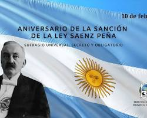
Hacia principios del siglo XX, el régimen político basado en el control de las élites y el fraude electoral comenzó a enfrentar una crisis de representatividad profunda. La exclusión de las crecientes clases medias y de los hijos de inmigrantes generaba tensiones que la estructura oligárquica no podía contener mediante la simple represión o el clientelismo.
Antes de 1912, las prácticas electorales se caracterizaban por la ausencia de privacidad y la coacción. El «voto cantado» implicaba manifestar de viva voz la elección ante una mesa usualmente ubicada al aire libre o en atrios de iglesias. Esta falta de anonimato permitía que caudillos y patrones ejercieran presiones directas: amenazas de pérdida del empleo o violencia física.
El sistema de «lista completa» aseguraba que el partido que obtenía la mayoría se quedaba con todos los cargos legislativos. El fraude era la norma: voto múltiple, exclusión de opositores del padrón y manipulación de actas. La participación electoral rara vez superaba el 2% de la población total.
La Ley 8.871, sancionada el 10 de febrero de 1912, permitió que en 1916 la Unión Cívica Radical, liderada por Hipólito Yrigoyen, accediera al poder mediante el voto popular masivo, desplazando a la élite conservadora que había gobernado por más de medio siglo.
La ley introdujo el "cuarto oscuro", el padrón único basado en el enrolamiento militar y la obligatoriedad del voto. Aunque mantuvo exclusiones importantes (mujeres y habitantes de Territorios Nacionales), fue el primer paso real hacia la democracia de masas en Argentina.
| Innovación | Descripción del Mecanismo |
|---|---|
| Voto Secreto | Uso del «cuarto oscuro» sin ventanas y sobres cerrados para asegurar privacidad total del votante |
| Padrón Único | Basado en los listados de enrolamiento militar, eliminando la manipulación de registros locales por caudillos |
| Voto Obligatorio | Establecido como deber cívico para fomentar la participación masiva y dificultar el control de los aparatos políticos |
| Lista Incompleta | El ganador obtiene 2/3 de las bancas; la primera minoría obtiene el 1/3 restante, garantizando representación opositora |
| Rol del Ejército | Encargado de fiscalizar y proteger el acto electoral para evitar la violencia de los clubes políticos |
La obligatoriedad no era solo un deber moral, sino una estrategia política deliberada: garantizar la concurrencia masiva y dificultar el control de los aparatos políticos locales sobre el padrón. Al hacer obligatorio el voto, se rompía la lógica clientelar que dependía de la abstención de los sectores no controlados.
La ley es uno de los hitos menos controvertidos de la historiografía argentina, aunque las interpretaciones sobre sus motivaciones divergen significativamente.
La ley fue una modernización necesaria, impulsada por una élite ilustrada que reconoció los límites del régimen de fraude. Sáenz Peña actuó movido por un genuino compromiso republicano y la convicción de que la legitimidad política requería bases populares reales.
La reforma fue una concesión estratégica para descomprimir la presión social sin ceder el poder económico. La oligarquía calculó que podría adaptarse a la democracia formal manteniendo su hegemonía en la economía. El golpe de 1930 revela que ese cálculo fracasó.
La ley mantuvo exclusiones fundamentales: las mujeres esperaron 35 años más para votar (1947), y los habitantes de los Territorios Nacionales (Patagonia, Chaco, etc.) no podían elegir autoridades nacionales. La democratización fue parcial y gradual.
Reforma Universitaria de 1918
Autonomía, cogobierno y gratuidad: el modelo universitario latinoamericano
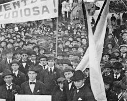
En 1918, la Universidad Nacional de Córdoba —institución con más de tres siglos de historia y estructura fuertemente conservadora— se convirtió en el escenario de una rebelión estudiantil que redefiniría la educación pública en toda Latinoamérica.
La Universidad funcionaba como una corporación cerrada. Los cargos docentes se transmitían de manera casi hereditaria entre la élite local conocida como la «aristocracia doctoral», y la enseñanza permanecía ligada a dogmas religiosos y escolásticos que ignoraban los avances científicos modernos. Los estudiantes, influidos por el nuevo clima democrático del país y por la Revolución Rusa y la Primera Guerra Mundial, comenzaron a reclamar una transformación profunda.
La chispa del conflicto fue la clausura de un internado en el hospital universitario. El 15 de junio, tras una elección de rector en que triunfó el sector más reaccionario, los estudiantes desconocieron el resultado, ocuparon el edificio y radicalizaron sus posturas.
El 21 de junio se publicó el histórico «Manifiesto Liminar», redactado por Deodoro Roca, que apelaba a los «hombres libres de Sud América» y denunciaba que las universidades se habían convertido en refugio de la mediocridad.
El documento, redactado por Deodoro Roca, exigía que el derecho a dirigir las instituciones académicas fuera compartido con estudiantes y graduados. Se transformó en el programa político de la reforma universitaria latinoamericana del siglo XX.
| Principio | Impacto en el Sistema Educativo |
|---|---|
| Autonomía Universitaria | Independencia del Estado y de los dogmas religiosos en la gestión académica e institucional |
| Cogobierno | Participación tripartita de docentes, graduados y estudiantes en la toma de decisiones universitarias |
| Gratuidad de la Enseñanza | Eliminación de barreras arancelarias para fomentar la movilidad social de la clase media y sectores populares |
| Libertad de Cátedra | Posibilidad de múltiples corrientes de pensamiento dentro de una misma materia; fin del dogmatismo escolástico |
| Extensión Universitaria | Compromiso de la universidad con las problemáticas sociales de su entorno comunitario |
| Periodicidad de la Cátedra | Los docentes debían renovar periódicamente su cargo mediante concursos, eliminando la perpetuación hereditaria |
El movimiento reformista no solo democratizó la universidad argentina, sino que la convirtió en un motor de ascenso social para las nuevas clases medias. Este modelo de universidad pública, gratuita y autónoma se expandió rápidamente por toda América Latina, sentando las bases de una tradición intelectual comprometida con la soberanía científica y la justicia social.
La reforma tuvo impacto inmediato en países como Chile, Uruguay, Perú y México. Pensadores como José Carlos Mariátegui y Víctor Raúl Haya de la Torre articularon sus proyectos políticos latinoamericanos desde los principios del movimiento de Córdoba de 1918.
La reforma fue la primera gran democratización de una institución de élite en la Argentina. La universidad pública y gratuita se transformó en un ascensor social sin precedentes, generando la primera gran clase media profesional latinoamericana y un intelectual comprometido con su entorno.
El cogobierno estudiantil fue funcional para democratizar pero creó rigideces institucionales que dificultan la actualización curricular y la eficiencia de gestión. La gratuidad sin financiamiento suficiente derivó en décadas de subpresupuesto crónico de las universidades públicas argentinas.
Argentina exportó el modelo reformista a toda América Latina. La autonomía universitaria y el cogobierno son principios constitucionales en múltiples países del continente, un legado directo de los estudiantes cordobeses de 1918 que perdura hasta el presente.
La Argentina Agroexportadora
El modelo liberal conservador y la inserción en el mercado mundial
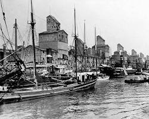
La Hegemonía Conservadora
Desde la consolidación del Estado nacional en 1880, Argentina fue gobernada por una oligarquía terrateniente organizada en el Partido Autonomista Nacional (PAN). El régimen se sostenía sobre el fraude electoral sistemático y la exclusión de las grandes mayorías populares.
- Actores Sociales: Terratenientes exportadores, capitales británicos, y una creciente clase media urbana e inmigrante marginada políticamente.
- Mecanismo Político: El fraude (el "voto cantado") y el clientelismo garantizaban la sucesión ininterrumpida de gobiernos conservadores.
La Transición Democrática (1912-1916)
La presión de las clases medias representadas por la UCR y revueltas armadas obligaron a buscar una salida institucional. La Ley Sáenz Peña (1912) introdujo el voto secreto y obligatorio para los varones, desmantelando el fraude.
Esto permitió el ascenso de Hipólito Yrigoyen en 1916: la primera vez que las clases medias urbanas e hijos de inmigrantes accedían al poder, marcando una democratización fundamental. Sin embargo, el poder económico profundo seguía en manos de la élite.
El debate contemporáneo sobre las reformas electorales (como la Boleta Única de Papel) a menudo remite a 1912 como el origen de la transparencia republicana en Argentina, discutiendo hasta qué punto los vicios clientelares han sido realmente erradicados del sistema político en la actualidad.
Argentina se insertó en el mercado mundial vendiendo cereales y carnes a Europa (principalmente Gran Bretaña), e importando manufacturas. Esta relación generó rápido crecimiento del PBI, pero estableció una dependencia extrema.
- Infraestructura extranjera: Ferrocarriles, bancos y frigoríficos estaban bajo control directo del capital británico.
- Falta de Industrialización: Los terratenientes no destinaron sus ganancias formidables a desarrollar una industria de bienes de capital.
- Vulnerabilidad externa: Caídas en los precios de los productos agrícolas paralizaban a todo el país.
Las exportaciones generaban una riqueza sin precedentes para la élite terrateniente pampeana, pero estructuraron un país "macrocefálico" que privilegió el puerto de Buenos Aires y relegó el desarrollo integral de las economías del interior.
Continuidades y Rupturas
Rupturas: Fin de las guerras civiles
intestinas; formación de un Estado Nacional unificado; modernización infraestructural (telégrafo y
tren).
Continuidades: La matriz agropecuaria heredada de la colonia persistió; la
dependencia financiera respecto de la libra esterlina británica.
El período pre-1930 es el eje de un debate historiográfico central que enfrenta dos tradiciones interpretativas fundamentales.
Fundamento: Ve esta etapa como el milagro del crecimiento que posicionó a Argentina
entre los países más ricos del mundo per cápita.
Limitaciones: Ignora sistemáticamente
la exclusión política, la profunda desigualdad en la tenencia de la tierra, la represión a las incipientes
huelgas obreras y la falta de planificación industrial a largo plazo, asumiendo que el derrame se daría de
forma natural.
Fundamento: Denuncia el modelo como "neocolonial", afirmando que el país se integró como
proveedor de materias primas barato bajo las directrices del Imperio Británico ("El granero del
mundo").
Limitaciones: Minimiza el aumento material genuino en las condiciones de vida
de los sectores medios, la alfabetización masiva promovida por el Estado y el progreso técnico introducido
por el flujo de capital de esa era.
Fundamento: Señala cómo el Estado fue el garante exclusivo de la burguesía terrateniente
agraria y el capital monopólico extranjero aplastando a los obreros (ej. Semana Trágica de
1919).
Limitaciones: Subestima las tensiones y pujas internas dentro del mismo Estado
(Radicalismo vs Conservadores) y la alta movilidad social ascendente producto de la educación pública
gratuita y la inmigración europea, considerándolos meros accidentes.
La Década Infame
El golpe del '30, el fraude electoral y los primeros pasos industriales
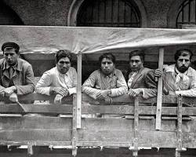
El golpe del 6 de septiembre de 1930 encabezado por el general Uriburu derrocó a Yrigoyen e inauguró una era de intervención militar para resolver crisis políticas. El gobierno conservador posterior se sostuvo mediante el "fraude patriótico": la manipulación electoral sistemática y violenta para evitar el regreso de las mayorías al poder.
- Actores Sociales: Oligarquía terrateniente readaptada, militares del Ejército, y una nueva burguesía industrial naciente por sustitución de importaciones.
- Mecanismo Político: Proscripción del radicalismo yrigoyenista y fraude electoral. Justificación elitista ("evitar la demagogia").
A pesar de su nombre peyorativo —acuñado por el periodista nacionalista José Luis Torres—, la Década Infame fue un período de modernización estatal forzada. Ante el colapso del comercio mundial, el Estado conservador abandonó el liberalismo clásico: creó el Banco Central, juntas reguladoras, y control de cambios. Paradójicamente, fundaron el Estado interventor moderno en Argentina para salvar las rentas del sector agropecuario.
El "Pacto Roca-Runciman" suele ser citado hoy en discusiones sobre soberanía ante potencias extranjeras (ej: negociaciones con el FMI o China). Se debate cuánto de los recursos y autonomía nacional deben cederse para garantizar la viabilidad comercial a corto plazo.
Argentina se comprometía a no reducir las compras a Gran Bretaña y le entregaba el monopolio del transporte urbano a cambio de mantener cuotas de exportación de carne ("estatuto legal del coloniaje").
La crisis del '29 cerró los mercados mundiales y obligó a Argentina a producir lo que antes importaba. Nació así la Industrialización por Sustitución de Importaciones (ISI): no como política deliberada, sino como respuesta pragmática a la emergencia. Surgieron fábricas textiles y alimenticias, principalmente en el conurbano bonaerense.
Este cambio estructural provocó migraciones masivas del interior rural hacia las periferias de Buenos Aires y Rosario en busca de trabajo. Estos nuevos obreros, que carecían de derechos laborales básicos y vivían en precariedad, alterarían definitivamente la geografía social argentina, formando poco después la base del peronismo.
Modelo de desarrollo basado en producir internamente los bienes que antes se importaban, protegiendo la industria nacional. Dominó la política económica latinoamericana hasta los años '80.
Continuidades y Rupturas
Rupturas: Fin del liberalismo ortodoxo e
inicio del Estado intervencionista y económico; las Fuerzas Armadas se consolidan como árbitro político
"legítimo".
Continuidades: La preeminencia económica de la oligarquía (salvada por el
Estado); la extrema desigualdad; la matriz política basada en la exclusión republicana de las mayorías.
Fundamento: Argumenta que el pragmatismo conservador salvó al país de la ruina tras
1929. Valoran a Federico Pinedo como un arquitecto estatal sofisticado y
moderno.
Limitaciones: Minimiza el componente represivo del régimen (torturas a
opositores), subestima el daño institucional del fraude e ignora que se socializaron pérdidas privadas.
Fundamento: Denuncia que el período representó la máxima entrega de la soberanía
nacional al extranjero, ejemplificado en el vergonzoso Pacto Roca-Runciman
(FORJA).
Limitaciones: Su antiimperialismo omite muchas veces la verdadera
consolidación de un Estado productivo modernizado internamente que propició las bases del primer
crecimiento industrial.
Fundamento: Enfatiza el evidente carácter de "dictadura de clase" del golpe de Uriburu:
una reacción patronal para destruir las limitadas concesiones sindicales previas e imponer salarios de
hambre.
Limitaciones: Simplifica a veces a las Fuerzas Armadas como meros títeres de
los terratenientes, cuando ya empezaban a gestar una ideología nacionalista e industrialista propia (que
eclosionaría en el 43).
El Peronismo Clásico
Justicia social, Estado activo y la irrupción de la clase obrera
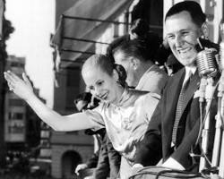
El 17 de octubre de 1945 es el momento fundacional del peronismo: una columna masiva de trabajadores marchó desde el conurbano hasta la Plaza de Mayo para exigir la liberación de Juan D. Perón, entonces Secretario de Trabajo. Fue el ingreso definitivo de la clase obrera industrial a la política nacional.
- Actores Sociales: La nueva clase obrera (los "cabecitas negras"), el sindicalismo organizado (CGT), y una burguesía industrial naciente, enfrentados a la oligarquía tradicional y parte de las clases medias.
- Mecanismo Político: Movilización de masas, alianzas sindicales, democracia electoral masiva (voto femenino) combinada con verticalismo partidario.
Perón ganó las elecciones de 1946 y 1951. Sancionó la Constitución de 1949, incorporando derechos sociales y reelección. Sin embargo, su gobierno consolidó rasgos de corte autoritario: proscripción táctica de opositores, control casi absoluto de medios y férreo culto a la personalidad de él y su esposa, Eva Duarte.
El golpe de 1955 ("Revolución Libertadora") lo derrocó militarmente, precedido por el brutal bombardeo a la Plaza de Mayo (junio 1955, >300 civiles muertos), inaugurando una espiral de violencia política que trituraría el país durante décadas.
La dicotomía originaria "Peronismo vs. Antiperonismo" sigue estructurando las coaliciones políticas modernas (ej. Frente de Todos vs Juntos por el Cambio o La Libertad Avanza). El legado de los derechos laborales (indemnizaciones, paritarias) es hoy el centro de las disputas sobre reformas de desregulación laboral.
Eva Perón organizó el Partido Peronista Femenino y dirigió un censo nacional para empadronar a millones de mujeres sin documento de identidad civil. En las elecciones de 1951, sobre 8,6 millones de empadronados, 4,2 millones eran mujeres (48,9%); el 90,32% de ellas concurrió a votar, superando toda expectativa histórica.
La política económica justicialista buscó la independencia económica. Nacionalizó los ferrocarriles (comprados a Gran Bretaña), el Banco Central, la telefonía y creó empresas estatales fuertes. El IAPI (Instituto Argentino de Promoción del Intercambio) monopolizó el comercio exterior para transferir rentas del campo a la industria.
El resultado fue una redistribución feroz del ingreso: la participación obrera en el PBI creció hasta el histórico 50% ("fifty-fifty"). Sin embargo, hacia 1952 la coyuntura internacional empeoró (fin del plan Marshall), los precios agrícolas cayeron y se desató la inflación y la crisis de balanza de pagos.
Perón debió ensayar un pragmático "Segundo Plan Quinquenal", congelando salarios y pidiendo inversiones petroleras a la Standard Oil estadounidense —contradiciendo su discurso original—, evidenciando los límites de sostener un consumo masivo sin desarrollo endógeno de bienes de capital.
Continuidades y Rupturas
Rupturas: Inclusión definitiva de los
trabajadores rurales y urbanos como ciudadanos con plenos derechos de clase media; redistribución drástica
de la renta; autonomía frente a bloques imperialistas (la "Tercera
Posición").
Continuidades: Persistencia de la dependencia estructural de las divisas
provenientes del campo pampeano para importar los insumos que la industria liviana necesitaba.
Pocos temas generan debate tan intenso en la historiografía argentina. Las interpretaciones van desde la acusación de fascismo hasta la celebración como la mayor democratización social del siglo XX.
Fundamento: Argumenta que Perón construyó un liderazgo demagógico cuasi-fascista que
destruyó el Estado de Derecho, disolvió la independencia judicial y despilfarró el superávit de
posguerra.
Limitaciones: Ignora completamente que el régimen que derrocó a Perón en
1955 canceló todas las libertades democráticas; y subestima el impacto real de la movilidad social
ascendente en las capas bajas.
Fundamento: Celebra al período 1946-1955 como la verdadera democratización (social) del
país, la consagración de la soberanía y la "Edad Dorada" de la felicidad del pueblo
trabajador.
Limitaciones: Tiende a edulcorar u ocultar las prácticas de control
político severo (encarcelamiento de opositores, expropiación de medios como La Prensa) y las
contradicciones económicas del modelo tras 1952.
Fundamento: Sostiene que el peronismo fue un "bonapartismo": un líder burgués que
contuvo y desvió el potencial revolucionario del proletariado institucionalizándolo desde el Estado para
salvar el capitalismo nacional.
Limitaciones: Le cuesta explicar la adhesión
identitaria profunda e inquebrantable de la clase obrera argentina hacia su líder, tratándola
frecuentemente como "falsa conciencia".
La mayoría de los historiadores contemporáneos coinciden en que el peronismo fue un fenómeno complejo: genuina ampliación de derechos y democratización social, combinada con rasgos autoritarios incompatibles con la democracia liberal.
Inestabilidad y Proscripción
El empate hegemónico y la espiral de violencia política
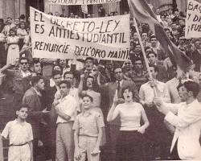
La "Revolución Libertadora" de 1955 no solo derrocó a Perón, sino que intentó borrarlo por decreto: prohibió sus símbolos, su música y hasta mencionar su nombre. Esta proscripción (que duró 18 años) convirtió al peronismo en un movimiento de resistencia con enorme base popular sindical, imposible de derrotar electoralmente pero impedido de gobernar democráticamente.
- Actores Sociales: Fuerzas Armadas como partido militar, cúpulas sindicales peronistas, organizaciones guerrilleras nacientes (Montoneros, ERP) y una clase media antiperonista.
- Mecanismo Político: Democracias tuteladas, golpes de Estado cíclicos y, progresivamente, el uso de la violencia armada extraestatal.
Los presidentes radicales —Arturo Frondizi (1958) y Arturo Illia (1963)— gobernaron bajo tutela militar permanente y con una legitimidad mermada por la proscripción de la mayoría. Ningún gobierno civil elegido democráticamente completó su mandato entre 1930 y 1983. Ante la clausura de las urnas reales, la violencia política escaló, encontrando justificación en amplios sectores de la juventud bajo el clima internacional de la Revolución Cubana guerrillera.
El efímero regreso triunfal de Perón en 1973 abrió una fugaz esperanza de pacificación, que se ahogó casi de inmediato en sangre civil a raíz del sangriento enfrentamiento entre la extrema derecha y la extrema izquierda del propio peronismo (Ej: Masacre de Ezeiza), desembocando en el colapso bajo la presidencia de Isabel Martínez de Perón (1974-1976).
El debate sobre los años '70 sigue siendo un campo de batalla (ej. discusiones sobre la "Teoría de los dos demonios"). Además, el término "proscripción" ha resurgido en la actualidad cuando líderes políticos de gran adhesión popular enfrentan condenas judiciales que amenazan con inhabilitarlos electoralmente.
El período se caracterizó por el ciclo conocido como "stop-and-go": la industria crecía intensamente hasta que escandalosamente faltaban divisas para importar bienes intermedios. El Banco Central devaluaba, esto encarecía alimentos importados, los sueldos perdían, llovían huelgas, y el ciclo recesivo volvía a estabilizar la balanza hasta que comenzaba otra vez el arranque, sin romper la trampa.
Arturo Frondizi intentó resolverlo desde el Desarrollismo: atrajo masivamente inversiones extranjeras directas en áreas críticas y pesadas (petroquímica, caucho, metalurgia, automotriz) para no depender de importar tantos bienes intermedios, un relativo éxito tecnológico que al costo desnacionalizó en parte el control corporativo de la economía local.
Es la incapacidad estructural de una economía periférica para exportar lo suficiente como para pagar las importaciones industriales que su propio crecimiento demanda. Es el cuello de botella argentino crónico.
Continuidades y Rupturas
Rupturas: Internacionalización aguda de
la industria nacional ante el desembarco de multinacionales de Norteamérica y Europa; nacimiento sistemático
y consolidación del actor militar-civil golpista como salvador
institucional.
Continuidades: Pese a la proscripción de todo partido, el movimiento
sindical continuó operando de base fuertemente, ganando enorme peso en cualquier decisión de estado. La
dependencia crónica de insumos importados.
Fundamento: Argumenta que la imposibilidad del país de consolidarse vino por la
debilidad de las reglas democráticas, avasalladas alternativamente por militares prepotentes y un
peronismo sectario, que imposibilitó a presidentes como Illia sostener un gobierno
racional.
Limitaciones: Falla en entender que no es sostenible pedirle respeto
"institucional" a la parte proscrita o ignorar la injerencia violenta y explícita del poder económico
concentrado en los golpes.
Fundamento: Lee toda la etapa como una "resistencia heroica" obrera y militante contra
una oligarquía imperialista sostenida a punta de fusil. Justifica retrospectivamente las luchas
paramilitares de la época como legítima defensa contra regímenes cívico-militares
inconstitucionales.
Limitaciones: Racionalizó inaceptablemente formas dramáticas de
violencia, romantizan el accionar de grupos que recurrieron al terrorismo, y desdibuja al "Perón del
exilio", táctico y por momentos sumamente conservador en la misma época.
Fundamento: Portantiero y O'Donnell (1977) plantean que nadie podía dominar todo: la
alianza popular tenía poder de veto social para frenar a la oligarquía (mediante la CGT), pero la alianza
oligárquica con apoyo militar tenía poder de fuego para bloquear la redistribución. Ergo: empate trágico
persistente.
Limitaciones: Su abstracción económica hace perder de vista los profundos
procesos culturales y el peso de las decisiones personales de líderes concretos en los desastres
ocurridos.
La Dictadura Militar
Terrorismo de Estado, desindustrialización y el quiebre definitivo
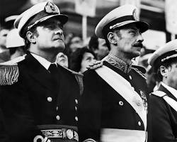
El golpe del 24 de marzo de 1976 (autodenominado "Proceso de Reorganización Nacional") inauguró el régimen más letal de la historia argentina. La Junta Militar implementó un plan sistemático de exterminio contra todo tipo de disidencia política, sindical o estudiantil: centros clandestinos de detención, vuelos de la muerte, torturas y asesinatos masivos. Los bebés nacidos en cautiverio fueron apropiados ilegalmente.
- Actores Sociales: Cúpulas de las tres Fuerzas Armadas, apoyadas activamente por sectores del empresariado concentrado (partícipes civiles), élites financieras, cúpulas de la Iglesia y medios de comunicación complacientes.
- Mecanismo Político: Terrorismo de Estado, suspensión de todas las garantías constitucionales, censura total y aniquilamiento físico del adversario político.
El régimen terminó acorralado por el colapso económico y el desgaste internacional por las denuncias de Derechos Humanos. En un intento desesperado por recuperar legitimidad patriótica, lanzó la Guerra de Malvinas (1982). La derrota humillante del 14 de junio de 1982 aceleró el derrumbe de la dictadura obligando a la transición democrática.
Los discursos "negacionistas" o "relativistas" que cuestionan la cifra de los 30.000 desaparecidos o el uso del término "Terrorismo de Estado" han cobrado nueva fuerza política. Parte de la discusión pública aborda si debe penalizarse o no el negacionismo de estos crímenes, como ocurre en Europa con el Holocausto.
Según la CONADEP (1984): 8.960 casos documentados de desaparecidos; organismos de derechos humanos estiman 30.000. 340 centros clandestinos de detención identificados. Cientos de niños apropiados a sus familias, de los cuales más de 130 han recuperado su identidad gracias a las Abuelas de Plaza de Mayo.
El ministro José Alfredo Martínez de Hoz implementó una reforma estructural inédita: apertura comercial total, "tablita" cambiaria para dar un dólar barato que financiara la importación agresiva y desregulación de los mercados financieros. El resultado fue la destrucción catastrófica de gran parte del aparato industrial argentino ante la competencia externa desleal (la "plata dulce").
Esta especulación financiera ("bicicleta financiera") requería de altas tasas de interés locales financiadas con dólares tomados en el exterior. La deuda externa se multiplicó por seis entre 1975 y 1983: de 8.000 a 45.000 millones de dólares. Hacia el final, en el escándalo de los seguros de cambio (1982), el Estado "estatizó" (asumió como pública) la inmensa deuda privada en dólares de grandes empresas locales y multinacionales.
Continuidades y Rupturas
Rupturas: Desmantelamiento y colapso del
modelo ISI que venía desde 1930; inicio de la hegemonía del capital financiero por sobre el
productivo/industrial.
Continuidades: La dependencia estructural de los centros de poder
financiero exterior, esta vez atados ya no formalmente por un "Imperio" mercantil sino por el mecanismo del
endeudamiento perpetuo con organismos y bancos internacionales.
Fundamento: Argumentó (popularmente en la temprana transición democrática de los 80s)
que la sociedad había sido víctima de una "guerra sucia" y excesos simétricos entre dos terrorismos
equiparables: el estatal y el guerrillero.
Limitaciones: Enmascarar la desproporción
asimétrica absoluta: no hubo guerra, el Estado argentino utilizó las fuerzas legales de la nación
subrepticiamente (sin juicios ni prisioneros formales) para exterminar ciudadanos.
Fundamento: Conceptualiza al período estrictamente como Terrorismo de Estado y genocidio
político planificado. Señala que el objetivo oculto de las torturas era purgar a la sociedad para poder
imponer un modelo económico neoliberal salvaje (disciplinamiento
social).
Limitaciones: Hay un debate sobre hasta qué punto la insurgencia armada
provocó el terror social que prestó consenso pasivo a la represión inicial en 1976.
Argentina fue pionera mundial en juzgar penalmente a los responsables de crímenes de lesa humanidad en un proceso civil. Las condenas a Videla, Massera y otros son un hito del derecho internacional de los derechos humanos. El fiscal Strassera cerró su alegato con la frase: «Señores jueces, nunca más».
- Documento Histórico: comisionporlamemoria.org — Sentencia del Juicio a las Juntas 1985
- Secundaria: Ministerio de Educación — 40° aniversario del Juicio a las Juntas
El Cordobazo
La alianza obrero-estudiantil y el despertar de la resistencia popular contra la dictadura de Onganía
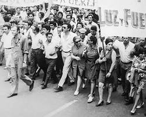
En mayo de 1969, la dictadura de Juan Carlos Onganía —que había derrocado al presidente Arturo Illia instaurando un régimen autoritario "sin plazos"— enfrentó su mayor desafío social. El Cordobazo fue una insurrección urbana que marcó un antes y un después en la relación política argentina.
- Actores Sociales: La vanguardia del movimiento obrero clasista automotriz (SMATA) y de servicios (Luz y Fuerza), en alianza táctica con el potente movimiento estudiantil universitario cordobés.
- Mecanismo Político: Acción directa de masas, huelga general activa y barricadas callejeras para desbordar la capacidad represiva de la policía local.
El 29 de mayo se declaró un paro activo de 36 horas. Las columnas de obreros marcharon desde las grandes fábricas de la periferia hacia el centro de Córdoba, encontrándose con los estudiantes. Cuando la policía intentó frenarlos asesinando al obrero Máximo Mena, la indignación popular fue incontrolable. Los manifestantes armaron barricadas, retrocediendo a las fuerzas de seguridad e incendiaron sedes de multinacionales y comisariados.
El Cordobazo a menudo se cita en paros generales o grandes movilizaciones piqueteras contemporáneas como el mito fundante del "poder en las calles" (ej. en el 2001 o movilizaciones universitarias de 2024), en debates sobre si la calle es legítima o no para condicionar a un gobierno de turno.
Durante varias horas, la segunda ciudad del país quedó fuera del control del Estado. El Ejército debió ser desplegado para retomar Córdoba. Fue la primera vez que una dictadura argentina experimentaba la pérdida temporal del control territorial de una ciudad mayor.
| Aspecto | Detalle |
|---|---|
| Líderes principales | Agustín Tosco (Luz y Fuerza), Elpidio Torres (SMATA), Atilio López (UTA) |
| Víctimas de la represión | Aproximadamente 20 muertos y cientos de detenidos |
| Consecuencia política inmediata | Renuncia del ministro Krieger Vasena y debilitamiento definitivo de Onganía |
| Réplicas en el país | Rosariazo, Tucumanazo y otros estallidos similares en todo el territorio nacional |
| Impacto a mediano plazo | Forzó la transición hacia la democracia y el retorno de Perón en 1973 |
Continuidades y Rupturas
Rupturas: Quiebre de la paz represiva de
Onganía; nacimiento de un sindicalismo clasista alternativo (basado en asambleas horizontales) que desafiaba
a la burocracia sindical peronista tradicional.
Continuidades: La proscripción
institucional peronista; el modelo industrial extractivo que seguía castigando el salario para exportar o
girar dividendos.
El Cordobazo es uno de los eventos más estudiados de la historia argentina reciente. Su interpretación historiográfica revela las tensiones entre diferentes tradiciones políticas e intelectuales sobre la violencia, la resistencia y la legitimidad.
Fundamento: Lee el evento prioritariamente como un quiebre del orden público injustificado perpetrado por agitadores radicales, destacando que el salario industrial en Córdoba era de los más altos del país, por lo que desestiman la teoría de la "miseria" y apuntan al adoctrinamiento político en la protesta.
Fundamento: El Cordobazo fue la chispa revolucionaria objetiva más avanzada hacia una Argentina socialista, al punto que probó que la alianza obrera (con gran presencia trotskista) era capaz de tomar una ciudad y quebrar un gobierno autoritario desde abajo ("Doble poder").
Fundamento: Argumenta que el Cordobazo fue menos un preludio revolucionario guevarista y más una "rebelión defensiva" local contra el cercenamiento severo de las formas de vida laboral (modificación del sábado inglés) arraigadas en una provincia fuertemente gremializada.
La Noche de los Lápices
El secuestro y desaparición de estudiantes secundarios en La Plata durante la dictadura
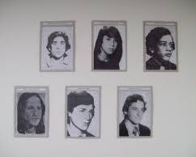
El golpe del 24 de marzo de 1976 instauró el período más letal de la historia argentina. Uno de los episodios más recordados por la juventud de sus víctimas es la "Noche de los Lápices", ocurrida a partir del 16 de septiembre de 1976 en la ciudad de La Plata.
- Actores Sociales: Estudiantes secundarios organizados (principalmente de la UES - Unión de Estudiantes Secundarios, ligada a la izquierda peronista) contra las fuerzas represivas conjuntas (Policía Bonaerense y Ejército).
- Mecanismo Político: Terrorismo de Estado capilar: operaciones clandestinas nocturnas, secuestro de menores de edad en sus domicilios particulares, y tortura en Centros Clandestinos de Detención (ej: "Pozo de Arana").
Durante décadas la masacre se simplificó narrativamente como el "castigo excesivo por reclamar un boleto escolar barato". Sin embargo, investigaciones posteriores —y el propio testimonio de los cuatro sobrevivientes (como Pablo Díaz y Emilce Moler)— aclararon que la dictadura apuntaba a algo más profundo: erradicar a toda una generación de líderes juveniles barriales y escolares. La dictadura consideraba el activismo estudiantil como el germen ("semillero") necesario de la subversión que debía ser amputado socialmente.
El rol político de los adolescentes sigue siendo objeto de debate. Cuando centros de estudiantes actuales toman colegios por demandas edilicias o educativas, suelen ser criticados por sectores conservadores que rechazan la "partidización" de las escuelas, mientras que otros reivindican esos actos como ejercicio del derecho a la protesta heredero de los Lápices.
La represión estudiantil no fue accidental ni excesiva: fue planificada. La dictadura identificó a los jóvenes organizados como una amenaza estructural, independientemente de si su militancia era armada o no. El terror generacional fue una política de Estado.
Los diez estudiantes secuestrados tenían entre 16 y 18 años. Sus historias personales muestran la dimensión humana del terrorismo de Estado: eran jóvenes que habían comenzado a comprometerse políticamente en un país que los perseguía por eso.
| Nombre | Edad | Situación actual |
|---|---|---|
| Claudio de Acha | 17 años | Desaparecido |
| María Claudia Falcone | 16 años | Desaparecida |
| María Clara Ciocchini | 18 años | Desaparecida |
| Francisco López Muntaner | 16 años | Desaparecido |
| Daniel Alberto Racero | 18 años | Desaparecido |
| Horacio Ungaro | 17 años | Desaparecido |
| Pablo Díaz | — | Sobreviviente. Testigo clave en los juicios |
| Emilce Moler | — | Sobreviviente. Doctora en Matemáticas, activista |
| Patricia Miranda | — | Sobreviviente |
- Institucional: UNGS — Testimonios del perfil biográfico de las víctimas
La reconstrucción de la memoria sobre la masacre mutó con el tiempo. Durante la transición democrática (los años 80), con la película "La Noche de los Lápices" (1986), se cristalizó la imagen de "víctimas inocentes" secuestradas solo por pedir un boleto de colectivo escolar. Esta narrativa era socialmente tolerada en ese momento porque despojaba a las víctimas de filiaciones políticas radicales que parte de la sociedad aún temía o rechazaba ("por algo será").
Hacia las décadas de 2000 y 2010, los mismos sobrevivientes (como Emilce Moler) impulsaron una revisión historiográfica que devolvió la identidad política plena a las víctimas: eran militantes peronistas, marxistas o guevaristas, y estaban comprometidos con la transformación social profunda de la Argentina y el trabajo en villas miseria. Hoy se los reivindica no por su ingenuidad, sino por su compromiso político.
Los juicios a los responsables materiales —como el temible comisario Miguel Etchecolatz— se reactivaron décadas después, logrando condenas a reclusión perpetua por delitos de lesa humanidad. Faltando días para la sentencia a Etchecolatz en 2006, desapareció el testigo Jorge Julio López, en un mensaje mafioso policial que recordó dramáticamente los métodos de la dictadura en plena democracia (continúa desaparecido).
La memoria de las víctimas transformó una fecha de terror en un símbolo de resistencia y compromiso. Cada año, miles de estudiantes argentinos recuerdan que el derecho a organizarse políticamente fue, para una generación, motivo de desaparición y muerte.
- Testimonial: UNGS — Memorias de los sobrevivientes de los Lápices
- Revista Científica: Revista Clepsidra / IDES — Memoria, justicia y disputas narrativas del evento
Abuelas de Plaza de Mayo
La búsqueda de la identidad, el Índice de Abuelidad y la ciencia al servicio de la memoria
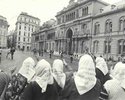
Frente al silencio cómplice de gran parte de la sociedad y el terror impuesto por el Estado, surgió un movimiento de resistencia pacífica liderado por mujeres. El 22 de octubre de 1977, doce mujeres constituyeron lo que hoy conocemos como *Abuelas de Plaza de Mayo*, con el objetivo innegociable de localizar y restituir a sus familias legítimas a los cientos de niños secuestrados.
- Actores Sociales: Madres y abuelas de clase media y trabajadora, enfrentadas al aparato represivo del Estado, la complicidad del Poder Judicial (jueces de menores) y los pactos de silencio eclesiásticos/militares.
- Mecanismo Político: Acción directa pacífica (rondas en la Plaza), vinculación con organismos internacionales de DDHH y exiliados, y la alianza estratégica histórica con la comunidad científica global.
A diferencia de las Madres —que buscaban a sus hijos adultos—, las Abuelas enfrentaron un desafío adicional casi imposible: identificar a niños que habían sido inscriptos como propios, con identidades falsas y fechas fraguadas, por familias de represores o allegados al poder. La dictadura mantenía vivas a las mujeres embarazadas en la ESMA o Campo de Mayo únicamente hasta el parto, para luego asesinarlas y apropiarse del bebé como "botín de guerra".
En la actualidad, algunos sectores cuestionan el "alineamiento partidario" reciente (kirchnerismo) de organismos de derechos humanos como Abuelas. Sin embargo, el consenso histórico sobre la magnitud heroica de su tarea originaria en dictadura y la validez técnica inobjetable de la restitución biológica de los nietos se mantiene inalterado institucionalmente.
Gracias a la incidencia internacional de las Abuelas, el Derecho a la Identidad fue reconocido como derecho humano fundamental e incorporado a la Convención sobre los Derechos del Niño de la ONU (1989). Argentina exportó un concepto jurídico al mundo desde la lucha de doce mujeres en una plaza.
- Institucional: Abuelas.org.ar — Historia oficial de la organización
- Divulgación: Feminacida — Explicación del Índice de Abuelidad
En ausencia de la generación intermedia (los padres asesinados), la justicia tradicional desestimaba los reclamos de las abuelas. Ellas recurrieron a la ciencia internacional para encontrar un método que demostrara el parentesco directo eslabonando su propia sangre con la del menor. En 1982, científicas como la genetista Mary-Claire King desarrollaron el «Índice de Abuelidad» formulado matemáticamente de manera pionera para este caso.
Este método probabilístico permitió establecer judicialmente con 99,99% de certeza que una abuela y un nieto estaban emparentados (evolucionando del cruce de HLA al revolucionario análisis del ADN mitocondrial materno). El avance tecnológico convirtió una sospecha subjetiva en una prueba irrefutable que ningún juez civil podía volver a desestimar.
- Científica: Abuelas.org.ar — Los aportes a la ciencia y la genética forense
- Académica / Divulgación: El Índice de Abuelidad y Mary-Claire King
Continuidades y Rupturas Genéticas y Legales
Rupturas: La ciencia forense pasó de
enfocarse criminalísticamente en la "culpa" a proveer "identidad". Transformación del concepto de filiación
judicial: la "verdad biológica" logró imponerse sobre actas de nacimiento falsificadas pero selladas por el
Estado.
Continuidades: La permanente necesidad de resguardo de las muestras biológicas
en el Banco Nacional (BNDG) ante el transcurso del tiempo y el fallecimiento natural de los abuelos, para
legar la búsqueda a la siguiente generación.
Fundamento: Comprende el aporte de Abuelas como el milagro jurídico contemporáneo de haber incorporado explícitamente el Derecho a la Identidad (Arts. 7 y 8) a la Convención sobre los Derechos del Niño de las Naciones Unidas (el instrumento internacional más ratificado de la historia humana).
Fundamento: Argumenta que Abuelas logró transformar el duelo paralizante individual en una fenomenal plataforma de acción política y resistencia. Al buscar la "verdad biológica", rompieron el pacto narrativo del Estado dictatorial y expusieron su monstruosidad a través de los cuerpos puros (niños).
| Logro Institucional | Descripción y Trascendencia |
|---|---|
| Nietos restituidos | Más de 133 personas han recuperado su identidad y origen. |
| Banco Nacional (1987) | El BNDG resguarda las muestras genéticas independientemente de que las abuelas fallezcan por la edad. |
| Convención ONU | Se incluyeron los "artículos argentinos" resguardando el derecho a la filiación biológica ante los Estados del mundo. |
| EAAF (Antropología) | El empuje inicial ayudó a consolidar al mundialmente prestigioso Equipo Argentino de Antropología Forense. |
Hoy las Abuelas estiman que quedan alrededor de 300 nietos aún sin identificar. La organización continúa activa, instando a quienes dudan de su identidad a realizarse un análisis genético voluntario y confidencial. La búsqueda no tiene plazo.
- Institucional: Abuelas.org.ar — Trayectoria y marco legal
- Internacional: Naciones Unidas — Convención sobre los Derechos del Niño (Artículos 7 y 8).
La Guerra de Malvinas
Soberanía, derrota y el colapso definitivo del Proceso de Reorganización Nacional
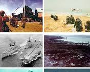
Hacia principios de 1982, el Proceso de Reorganización Nacional enfrentaba una crisis terminal: desindustrialización, devaluación brutal y la primera gran huelga general de la CGT (marzo de 1982) pidiendo democracia. En un intento desesperado por recuperar la iniciativa política y unificar al país bajo una hegemonía nacionalista, la Junta liderada por Leopoldo Galtieri ordenó desembarcar en las Islas Malvinas el 2 de abril de 1982.
- Actores Sociales: La Junta Militar (necesitada de legitimidad), el gobierno británico de M. Thatcher (también con crisis de popularidad interna), y los soldados conscriptos argentinos (clases 62/63, jóvenes de 18-19 años de todo el país civil).
- Mecanismo Político: Instrumentalización del histórico y legítimo reclamo soberano argentino como herramienta de propaganda interna para cancelar la disidencia política bajo la acusación de "traición a la patria".
La «Operación Rosario» logró la toma inicial sin muertos británicos, generando un estallido de euforia popular en la Plaza de Mayo que la dictadura interpretó erróneamente como un cheque en blanco. Gran Bretaña, aliada logística de EEUU (que abandonó a Argentina pese al TIAR) e inteligencia chilena de Pinochet, envió una formidable flota.
Tras el hundimiento fuera del área de exclusión del crucero ARA General Belgrano (quebrando cualquier paz posible y matando a 323 argentinos), la guerra terrestre en las islas fue desigual: tropas profesionales y equipadas cerraron el cerco sobre conscriptos aislados, mal abastecidos y muchas veces torturados por sus propios oficiales militares (estaqueamientos).
- Gubernamental: Ministerio de Defensa — Informe Oficial del Ejército Argentino
- Documento Histórico: Casa Rosada — Informe Rattenbach (Desclasificado)
| Dato | Cifra |
|---|---|
| Duración del conflicto | 74 días (2 de abril al 14 de junio de 1982) |
| Fallecidos argentinos | 649 militares |
| Fallecidos británicos | 255 militares y 3 civiles |
| Bajas solo en el Belgrano | 323 marinos (casi la mitad del total argentino) |
| Costo para el Reino Unido | Aprox. 2.600 millones de dólares |
| Veteranos con secuelas | Miles con PTSD; suicidios post-guerra superan a caídos en combate |
Al regresar al continente, los soldados fueron ocultados de la sociedad para esconder la derrota. Durante la década de 1980 el Estado ignoró sus secuelas físicas y psicológicas. Esto resultó en que las cifras de suicidios de veteranos en la posguerra terminaran equiparando alarmantemente a las víctimas caídas directamente en combate.
Continuidades y Rupturas
Rupturas: Fracaso definitivo del "Partido
Militar" como garante del orden para la élite civil; obligó a la convocatoria a elecciones irrevocables en
1983 para refundar la república.
Continuidades: La usurpación británica de las islas
(vigente desde 1833), ahora militarizada y solidificada por la victoria bélica que excluyó a Argentina de
cualquier negociación diplomática ventajosa en la ONU.
Fundamento: Consideraba que todo el episodio, incluidos los jóvenes combatientes, debía
ser olvidado como la última locura criminal de una dictadura genocida y enfatizaban la condición exclusiva
de "víctimas ignorantes" pasivas de los conscriptos.
Limitaciones: Al victimizar por
completo a los soldados, les negaba la agencia, valor táctico y el genuino patriotismo con el que
combatieron contra una potencia imperial bajo condiciones de abandono.
Fundamento: Busca separar absolutamente la nobleza de la Causa Nacional Malvinas de la
bajeza moral de la Junta Militar de Galtieri. Reivindica el coraje de pilotos, suboficiales y conscriptos
caídos como héroes inobjetables frente al colonialismo británico.
Limitaciones: Corre
el riesgo constante de ser cooptada por los resabios militaristas o de ultraderecha para vindicar
marginalmente al Ejército entero (incluso a los torturadores de civiles ocultos que fueron mandos en el
Sur).
En la diplomacia reciente, ha habido polémica sobre hasta qué punto el gobierno argentino debe confrontar a Londres u optar por una visión pragmática/comercial que relaje la soberanía. Además, ex combatientes iniciaron querellas judiciales (aún discutidas en la Corte Suprema) para que las torturas recibidas por sus oficiales en las islas sean consideradas "delitos de lesa humanidad" e imprescriptibles.
El Juicio a las Juntas
El primer juicio civil a una dictadura militar en América Latina y el pilar de la democracia recuperada
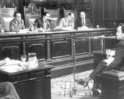
Tras la asunción del radical Raúl Alfonsín el 10 de diciembre de 1983, Argentina enfrentó el colosal desafío constitutivo de juzgar al Estado terrorista reciente mientras los militares aún conservaban sus armas y poder de lobby. Alfonsín dictó los decretos 157 y 158 (ordenando procesar tanto a las cúpulas guerrilleras como militares) y creó la CONADEP (Comisión Nacional sobre la Desaparición de Personas), presidida por Ernesto Sabato.
- Actores Sociales: El incipiente gobierno democrático y los organismos históricos de DDHH (Madres, Abuelas, CELS) buscando justicia legal frente a un poder militar residual y una Iglesia Católica y casta empresarial mayormente esquivas o dudosas respecto a revisionar el pasado.
- Mecanismo Político: Conformación de un tribunal civil (Cámara Federal) tras la negativa e inacción inicial de la justicia militar (Consejo Supremo de las Fuerzas Armadas) de autodepurarse.
Durante nueve meses, la CONADEP recolectó miles de testimonios reconstruyendo el circuito de 340 Centros Clandestinos de Detención, plasmando la evidencia en el informe «Nunca Más». Este documento quebró para siempre la "teoría de los excesos", probando que la tortura y desaparición respondían a una burocracia planificada, vertical y sistemática.
El histórico juicio oral comenzó el 22 de abril de 1985 a cargo de un tribunal civil y del fiscal Julio César Strassera (y su adjunto Luis Moreno Ocampo). Declararon la sobrecogedora cifra de 833 testigos bajo plena garantía procesal legal (ausente en la dictadura).
El Juicio a las Juntas fue pionero a nivel global. Su modelo —tribunal civil ordinario, plenas garantías procesales, pruebas documentales y testimoniales— se convirtió en referencia para los procesos de justicia transicional de décadas posteriores en todo el mundo.
- Documento Primario Judicial: Comisión por la Memoria — Texto Completo de la Sentencia (Causa 13/84)
- Educativa: ABC / DGCyE — Recursos educativos sobre el 40° aniversario
| Acusado | Cargo | Condena |
|---|---|---|
| Jorge Rafael Videla | Comandante en Jefe del Ejército / Presidente de facto | Reclusión perpetua e inhabilitación absoluta |
| Emilio Eduardo Massera | Comandante en Jefe de la Armada | Reclusión perpetua e inhabilitación absoluta |
| Roberto Eduardo Viola | Comandante del Ejército / Presidente de facto | 17 años de prisión |
| Armando Lambruschini | Comandante de la Armada | 8 años de prisión |
| Orlando Ramón Agosti | Comandante de la Fuerza Aérea | 4 años de prisión |
| Graffigna, Lami Dozo, Galtieri, Anaya | Otros comandantes | Absueltos en esta instancia (condenados en juicios posteriores) |
El 9 de diciembre de 1985, probando incontrastablemente el circuito ilegal (secuestro, tortura, muerte), el tribunal encontró a las cúpulas culpables. Sin embargo, las presiones y asonadas de mandos medios militares ("Carapintadas" en 1987) forzaron al Congreso alfonsinista a promulgar las controvertidas leyes de Punto Final y Obediencia Debida, que exculparon a perpetradores subordinados, clausurando procesos. Además, el presidente Carlos Menem decretó una serie de Indultos (1989-1990), liberando incluso a los jerarcas recién reclusos apelando a la "pacificación nacional".
A pesar del apagón judicial de los años 90 (donde rigieron solo los acotados "Juicios por la Verdad", sin impacto penal), esa impunidad llegó a su fin durante el kirchnerismo: en 2003 el Congreso y en 2005 la Corte Suprema declararon las leyes del perdón "nulas" de nulidad absoluta tras rotular el accionar represivo como crímenes de lesa humanidad (imprescriptibles), deparando cientos de nuevas condenas hasta el día de hoy.
- Poder Judicial CABA: Juicio a las Juntas: Sentencias al detalle
Continuidades y Rupturas Éticas e Institucionales
Rupturas: Fin histórico al ciclo
sistémico de golpes de Estado civiles cívico-militares que dominaron Argentina durante 50 años (1930-1983).
Cese del uso de las F.F.A.A. (ahora subordinadas) como "partido del orden" en crisis
domésticas.
Continuidades: Pervivencia soterrada de bolsones de violencia institucional
(gatillo fácil y tortura policial civil) heredados logísticamente de las metodologías represivas estatales
que nunca lograron depurarse completamente del Ministerio de Seguridad.
Fundamento: Comprende a la década del 70 como una ola en la que dos simétricos terrorismos minoritarios (el de Estado y el insurgente-guerrillero) secuestraron a una sociedad civil pasiva. Ensalza al Juicio como el triunfo definitivo del Estado de Derecho, la imparcialidad ciega y la república (Alfonsín) por sobre cualquier venganza partidarizada.
Fundamento: Rechaza la figura de "Dos Demonios" argumentando que el Estado ejerce un innegable monopolio de la violencia y detenta deberes y obligaciones asimétricos frente a agrupaciones guerrilleras. Considera que el plan no combatió una "guerra" bélica paritaria, sino que empleó tácticas de genocidio profiláctico enfocadas en fulminar al germen de clase obrera e intelectual para imponer un duro modelo económico neoliberal, el cual el juicio de 1985 obvió juzgar (concentrado en los "militares" pero omitiendo al poder económico cómplice).
Periódicamente resurgieron a nivel nacional (ej. "caso 2x1" en la CSJN, 2017 o posturas partidarias pos-2023) minoritarios debates de tintes negacionistas/reivindicadores o reclamos de prisión domiciliaria que plantean "una memoria completa", quejándose de los juzgamientos militares asimétricos respecto al no-juzgamiento contemporáneo (ya perimido/prescrito) de las agrupaciones armadas (Montoneros y ERP). Las movilizaciones del 24 de marzo son su histórico y firme contra-escenario.
«Señores jueces, nunca más» — Julio César Strassera, fiscal del Juicio a las Juntas, 18 de septiembre de 1985. Tres palabras que sintetizaron el mandato ético de una generación y se transformaron en el principio rector de la política de derechos humanos argentina.
- Investigación Académica: CPM — A 35 años: Balance y análisis historiográfico de los límites y logros
- Periodística Histórica: Infobae (G. Borda) — La construcción del texto de la sentencia original
Democracia y Crisis del 2001
La recuperación democrática, la hiperinflación menemista y el colapso de la convertibilidad
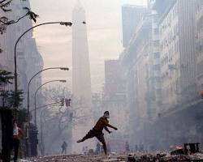
Con la caída de la dictadura, el radical Raúl Alfonsín inauguró la recuperación democrática en 1983. Su mandato sentó las bases de los DD.HH. pero sucumbió ante el poder de los sindicatos, el establishment financiero y la hiperinflación de 1989, obligándolo a entregar el mando anticipadamente al peronista Carlos Menem.
- Actores Sociales: Capital financiero internacional prestamista, empresas multinacionales y locales privatizadas, sectores medios urbanos (ahorristas), y un naciente y explosivo movimiento de desocupados ("Piqueteros").
- Mecanismo Político: Hegemonía del "Consenso de Washington": privatización total de empresas públicas (YPF, Aerolíneas, trenes), flexibilización laboral y alineamiento automático con Estados Unidos ("Relaciones Carnales").
Durante los años '90, el gobierno menemista ató por ley el valor del peso al dólar (1 a 1), cortando la hiperinflación pero destruyendo la industria local debido a la avalancha de importaciones baratas financiadas con acelerado endeudamiento externo. La crisis de la convertibilidad le estalló al sucesor, Fernando de la Rúa (Alianza, 1999-2001), quien intentó sostener el modelo mediante el "Déficit Cero" (recorte del 13% a jubilados) y el "Megacanje" de deuda.
En diciembre de 2001, para evitar una corrida bancaria terminal, el ministro Domingo Cavallo impuso el corralito bancario. Esto unió en la protesta a las clases medias estafadas (cacerolazos) y a los sectores populares excluidos y hambrientos (saqueos a supermercados). El gobierno declaró el Estado de Sitio, la represión policial dejó 39 civiles muertos a lo largo del país, y De la Rúa renunció, escapando en helicóptero tras el grito colectivo: "Que se vayan todos, que no quede ni uno solo".
- Sociología Económica: UNICEN — Análisis académico de las causas del colapso de 2001
- Periodismo Económico: Criteria — Resumen financiero del Corralito y el Megacanje
La Convertibilidad fue exitosa a corto plazo para sepultar la memoria hiperinflacionaria, pero generó una trampa macroeconómica letal: al carecer de política monetaria (no podía emitir ni devaluar legalmente), la Argentina debía endeudarse en dólares exponencialmente para mantener los pesos en circulación. Cuando Brasil devaluó agresivamente en 1999 abaratando sus productos, Argentina perdió a nivel sudamericano su escasa competitividad exportadora.
Al negarse a devaluar por el costo político ("el que devalúa pierde" era el dogma), se forzó una "devaluación interna": baja nominal extrema de salarios (deflación) que derrumbó el consumo. Tras el desplome de 2001, Eduardo Duhalde finalmente devaluó (fin del 1 a 1), provocando la temida pero inevitable licuación de ingresos ("pesificación asimétrica").
Continuidades y Rupturas Estructurales
Rupturas: Fin del dogma de la paridad
cambiaria fija, del sueño de pertenecer al "Primer Mundo" noventista y colapso generalizado del rígido
sistema bipartidista (UCR-PJ) imperante desde 1983.
Continuidades: Nacimiento y
consolidación orgánica de la protesta piquetera y los movimientos sociales no sindicalizados como nuevos
garantes o contrapesos de la gobernabilidad callejera, una dinámica que rige la política territorial hasta
el presente.
Fundamento: Sostiene que el problema nunca fue la Convertibilidad en sí misma como
herramienta monetaria, sino la sistemática indisciplina fiscal de los políticos (gasto provincial y
nacional). Afirman que si se hubieran achicado los presupuestos a tiempo, la baja de impuestos habría
impulsado a los privados y el 1 a 1 hubiese sobrevivido sin crisis
social.
Limitaciones: Minimiza el hecho técnico de que, como las exportaciones no
crecían por el tipo de cambio atrasado, ni siquiera el "déficit cero" extremo implementado por De la Rúa
alcanzó para cubrir los crecientes intereses de una deuda insostenible sin violar el pacto social
democrático.
Fundamento: Considera que el modelo de valorización financiera cimentado en la dictadura
encontró su paroxismo terminal bajo la convertibilidad de Menem. Para esta visión, el estallido era el
corolario crónico de un esquema planificado expresamente para transferir riqueza del salario a los
acreedores globales, requiriendo un nivel de exclusión social (54% de pobreza) que hacía implosionar
cualquier piso democrático.
Limitaciones: Muchas veces desestima el amplio consenso
electoral inicial (reelección de Menem en 1995 con el 49%) de una sociedad que, traumatizada por la
hiperinflación de 1989, priorizó la estabilidad nominal del consumo ("dame dos") por sobre el empleo
industrial, sosteniendo el modelo culturalmente.
El "Fantasma del 2001" es invocado regularmente ante cualquier intento contemporáneo de los gobiernos libertarios u ortodoxos de restaurar un régimen de dolarización o ajuste recesivo severo, operando como un mito paralizante o una lección dolorosa sobre hasta dónde toleran las clases medias la confiscación de ahorros y las clases bajas la privación de sustento ("Paz Social vs. Ajuste").
Néstor Kirchner
La reconstrucción del Estado, el desendeudamiento y la política de derechos humanos
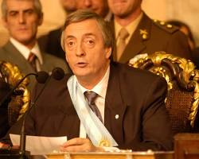
El santacruceño Néstor Kirchner asumió el 25 de mayo de 2003 con apenas el 22,2% de los votos —el piso más bajo de la historia nacional—, luego de que Carlos Menem se fugara del ballotage previendo una derrota aplastante. Llegaba a la Casa Rosada con el estigma de ser el "títere" político del presidente saliente (Eduardo Duhalde), sin estructura partidaria de alcance nacional y sobre un país con 54% de pobreza.
- Actores Sociales: Alianza transversal ("Transversalidad") entre gobernadores peronistas, organismos de DD.HH., sectores sindicales tradicionales (CGT liderada por Moyano) y movimientos piqueteros cooptados o pacificados mediante planes sociales.
- Mecanismo Político: Reconstrucción de la liturgia del "Estado Presente", fuerte hiperpresidencialismo (uso intensivo de DNU), y confrontación retórica constante con poderes fácticos (el FMI, la vieja corporación judicial y los militares) para construir hegemonía desde la minoría.
Para construir legitimidad, Kirchner aplicó medidas audaces en paralelo a la estabilización económica: promovió el juicio político a la "Mayoría Automática" menemista en la Corte Suprema, bajó los cuadros de los dictadores Videla y Bignone del Colegio Militar frente a la cúpula castrense, e impulsó la anulación legislativa y judicial de las leyes de impunidad (Punto Final y Obediencia Debida). Esta decisión selló un pacto histórico inquebrantable entre el kirchnerismo naciente y la base militante de derechos humanos.
En el plano internacional, consolidó la "Patria Grande" aliándose con Lula Da Silva (Brasil) y Hugo Chávez (Venezuela), cuyo punto culmine fue el rechazo frontal ("ALCA al carajo") al Área de Libre Comercio impulsada por EE.UU. en la Cumbre de Mar del Plata de 2005.
La macroeconomía del período transitó un sendero de excepcionalidad positiva ("Tasas Chinas" del 8-9% anual) apalancada en tres pilares: un tipo de cambio real alto (dólar caro post-devaluación de Duhalde) que protegía a la industria local como un arancel encubierto; precios internacionales récord de materias primas (el super-ciclo de la soja traccionado por China); y una capacidad instalada ociosa que permitía a las fábricas crecer sin necesidad de nuevas inversiones inmediatas tras el parate de 2001.
El logro más perdurable fue la monumental reestructuración de la deuda externa en default desde 2001. Bajo la gestión del ministro Roberto Lavagna (2005), Argentina impuso una quita histórica del 65% a los acreedores privados. Además, en 2006, Kirchner saldó la totalidad de la deuda con el FMI (USD 9.530 millones) en un solo pago con reservas, emancipando la política económica de las revisiones trimestrales del organismo.
El éxito macro se tradujo en la calle: se reinstauraron las convenciones colectivas de trabajo (paritarias libres), el desempleo cayó a un dígito (del 21% al 8%) y el consumo interno estalló ("Superávits Gemelos" fiscal y comercial). Hacia el final del mandato (2007), la inflación comenzó a acelerarse e insinuar los primeros límites del modelo de tipo de cambio competitivo, y Kirchner fue sucedido por su esposa, Cristina Fernández.
Continuidades y Rupturas Económicas
Rupturas: Quiebre total con el manual
neoliberal de los años 90 (Consenso de Washington); retorno del Estado como mediador insoslayable entre el
capital y el trabajo (fuerte fortalecimiento sindical).
Continuidades: Pese al discurso
reindustrializador, la base genuina de provisión de divisas continuó (y se profundizó estructuralmente)
siendo la exportación primaria de bienes sin procesamiento (Soja o sector agro-pampeano), configurando una
reprimarización latente.
La historiografía sobre Kirchner está aún en formación, dado que las fuentes primarias son recientes. Sin embargo, ya emergen interpretaciones contrastantes sobre su legado.
Fundamento: Argumenta que Kirchner fue el gran "fundador o restaurador" del Estado
Nacional en siglo XXI. Ante condiciones inmejorables externas, otros países de la región enriquecieron
solo a sus élites. Kirchner tuvo la decisión política y moral (no económica) de repartir esa riqueza a
través del mercado interno, la clase trabajadora y la emancipación soberana del
FMI.
Limitaciones: Tiende a minimizar el salvaje ajuste de salarios reales que
concretó interesadamente Duhalde el año previo (2002); Kirchner no heredó una economía trabada, sino un
resorte inflado y una licuación laboral ya purgada y lista para rebotar.
Fundamento: Reduce el éxito a una carambola coyuntural demográfica internacional (el
"Boom de los Commodities" y la tonelada de soja rozando los USD 600) que el gobierno simplemente se limitó
a cosechar (vía nuevas altas retenciones agropecuarias). Señala que la gestión derrochó institucionalidad
cooptando la justicia e interviniendo burdamente el INDEC hacia 2007 para no pagar bonos atados al CER y
falsear la naciente inflación.
Limitaciones: Ignora el mérito crucial de la firmeza
negociadora soberana del Ministro Lavagna ante los acreedores externos privados (Canje de Deuda 2005), una
maniobra elogiada por sectores ortodoxos pragmáticos que permitió blindar el PBI del drenaje financiero
por una década.
La figura de "Néstor" hoy es disputada. El peronismo actual ortodoxo o "racional" suele reivindicar los formidables números macroeconómicos de Néstor Kirchner (superávit fiscal intocable y dólar competitivo) para contraponerlos con las políticas monetarias hiper-expansivas y deficitarias aplicadas posteriormente por su esposa, CFK, y por el gobierno de Alberto Fernández, considerándolos desvíos del modelo patagónico original.
Cristina Fernández de Kirchner
Dos mandatos marcados por expansión de derechos, conflicto con el campo y restricción externa
Cristina Fernández de Kirchner ganó las elecciones de 2007 con el 45,3% de los votos en primera vuelta, garantizando una sucesión hegemónica del Frente para la Victoria. Sin embargo, en 2008 desató la crisis política más profunda del ciclo al anunciar la Resolución 125 (retenciones móviles a la exportación de soja).
- Actores Sociales: La burguesía agraria pampeana aliada a las clases medias metropolitanas (cacerolazos en Recoleta) en franca oposición al aparato estatal nacional y las bases del conurbano ("Los Pibes para la Liberación", La Cámpora). Nacimiento del periodismo fuertemente de trinchera (Clarín vs. 6-7-8).
- Mecanismo Político: Agudización del antagonismo amigo-enemigo (lógica populista), utilizando el aparato cultural estatal, estatizaciones estratégicas (AFJP en 2008 para financiar planes sociales) y sancionando una Ley de Medios para quebrar monopolios comunicacionales de la oposición fáctica.
La fallida Resolución 125 movilizó al país, paralizó rutas por 100 días y terminó en derrota del gobierno cuando el vicepresidente radical Julio Cobos desempató en el Senado votando "no positivo". Paradójicamente, este quiebre catalizó la recomposición militante del kirchnerismo y la mítica construcción de "La Grieta".
La repentina muerte de Néstor Kirchner en 2010 agigantó la figura de Cristina, quien en 2011 logró su reelección con el 54,1% de los votos —mayor victoria individual de la democracia—. En este segundo mandato (2011-2015), signado por la escasez de divisas, estatizó el 51% de YPF y sancionó hitos como la Asignación Universal por Hijo (AUH), el Matrimonio Igualitario (2010) y la Ley de Identidad de Género (2012).
La economía kirchnerista, agotado el ciclo de altos precios externos de su esposo y exacerbada por el estallido de la crisis financiera global (Lehman Brothers, 2008), adoptó una tesitura extremadamente defensiva. El gobierno incrementó sideralmente el gasto público y la emisión monetaria para sostener el consumo y subsidiar (casi regalando) las tarifas de energía de las clases medias y altas de Buenos Aires. En paralelo, estatizó las Administradoras de Fondos de Jubilación (AFJP), recuperando ingresos cuantiosos pero de corto plazo.
A partir de 2011 chocó de frente con la restricción externa: el país ya no generaba los dólares suficientes para importar los insumos que la industria interna requería para funcionar ni para importar gas. La repuesta de CFK fue aplicar en 2011-2012 el "Cepo Cambiario" (prohibición de compra libre de dólares). Esta medida cortó la fuga de capitales temporalmente pero paralizó la inversión, disparó la cotización paralela ("Dólar Blue") y estancó la creación de empleo privado desde 2012 hasta el fin de mandato.
Análisis de Inflación y CEPO: El INDEC fue intervenido en 2007 (Guillermo Moreno) dinamitando las estadísticas oficiales que pasaron a marcar un dígito irreal; analistas universitarios y privados estimaban que desde 2012 la inflación superaba el 25% crónico, sentando el régimen de "alta inflación moderna" argentina.
Continuidades y Rupturas
Rupturas: Cierre de la estructura
previsional privada noventista y re-apropiación de recursos estratégicos (YPF); institucionalización de
derechos civiles (LGBTIQ+) inéditos a nivel sudamericano (y mundial para
2010).
Continuidades: Persistencia crónica de la vulnerabilidad estructural (restricción
externa) frente a la falta de dólares; incapacidad de transformar el boom sojero en una matriz productiva
tecnológica que independice a la nación de las exportaciones agrarias.
Fundamento: Argumenta que los gobiernos de CFK representan la verdadera democratización
social de la historia reciente tras el peronismo clásico. Subrayan que la estatización de YPF, de
Aerolíneas, y los millones invertidos en subsidios directos (AUH) y salarios protegieron a las clases
trabajadoras y medias frente a las feroces crisis del capitalismo global (2008). Consideran al "Cepo" como
una defensa legítima de los dólares (que son generados por el Estado/Tierra) para evitar que las élites
agrarias y financieras fuguen la riqueza al exterior.
Limitaciones: Omite
frecuentemente que la gigantesca inyección monetaria y de subsidios terminó forzando a emitir pesos sin
respaldo agudizando el castigo inflacionario sobre esos mismos salarios obreros, cerrando la década (2015)
sin crecimiento en el PBI per cápita desde 2011 y con un altísimo cepot para importar bienes necesarios
(Ej: insumos médicos y/o repuestos).
Fundamento: Sostiene que CFK despilfarró el mayor período de acumulación de reservas
históricas (legadas por Néstor Kirchner) sosteniendo artificialmente populismo de consumo cortoplacista
para ganar elecciones (el 54% de 2011). Critica duramente la intervención del INDEC considerándolo una
degradación moral profunda del Estado y tipifican al modelo político como fuertemente autoritario ("La
Grieta"), sostenido mediante una intrincada matriz de corrupción con la obra pública (Vialidad) y el ahogo
asfixiante de impuestos al sector privado productivo (el Campo).
Limitaciones: Suele
desconocer la ampliación material efectiva e indispensable de la cobertura jubilatoria a millones de
ancianos sin aportes legales, y minimiza la agresividad histórica de los sectores terratenientes a la hora
de boicotear estructuralmente cualquier matriz distributiva de impuestos e ingresos que ose tocar la renta
agraria exportadora diferencial.
Cristina Fernández de Kirchner sigue siendo la figura (2020s) ineludiblemente central de la política nacional para orbitar en favor o en su contra ("Kirchnerismo" vs. "Antikirchnerismo/Macrismo/Mileísmo"). La pertinencia o perjuicio del "Cepo" a la divisa extrajera implementado en 2011 rige, catorce años después, los modelos y anclas estabilizadoras de cualquier gobierno que intenta comandar los destinos económicos argentinos.
Mauricio Macri
El giro liberal, el retorno al FMI y el colapso cambiario de 2018
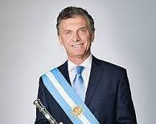
El empresario Mauricio Macri ganó el inédito ballotage presidencial de 2015 con el 51,4% de los votos, imponiéndose al PJ (Scioli). Marcó un hito rotundo al ser la primera vez en un siglo que un candidato no peronista ni puramente radical lograba acceder a la presidencia mediante el voto popular. Encabezó "Cambiemos", una coalición entre su partido porteño (PRO), la centenaria Unión Cívica Radical (UCR), y la Coalición Cívica.
- Actores Sociales: Sectores empresariales y financieros, clases medias y altas urbanas cansadas del estilo confrontativo kirchnerista, y una gran alianza con los multimedios opositores. Enfrente tuvo a gremios, movimientos piqueteros en las calles y gremialistas docentes altamente movilizados.
- Mecanismo Político: Retórica de gestión tecnocrática ("el mejor equipo de los últimos 50 años"), despolitización de la vida pública, gradualismo económico sustentado en furioso endeudamiento externo, y polarización judicial/mediática constante con las causas de corrupción de su predecesora ("La Pesada Herencia").
Los primeros años del macrismo, bajo la promesa de una "Lluvia de Inversiones", transcurrieron con la rápida y al principio exitosa eliminación inicial del Cepo Cambiario (2015) y el pago efectivo a los "fondos buitre" (holdouts) cerrando el default de 2001. En 2017 ganó contundentemente las elecciones legislativas cimentando su gobernabilidad.
No obstante, la debilidad macroeconómica subyacente (déficit financiado ahora con dólares prestados) colapsó en 2018. Una violenta corrida cambiaria devaluó el peso, destruyó salarios y sepultó el proyecto reeleccionista. En las primarias (PASO) de agosto de 2019, la fórmula peronista unificada (Alberto y Cristina Fernández) le infligió un duro e irreversible castigo electoral.
La política económica de "Cambiemos" aplicó inicialmente un gradualismo fiscal ortodoxo: redujo los impuestos directos a la agroexportación (retenciones) y liberó el mercado cambiario confiando que la credibilidad "pro-mercado" de su gabinete atraería Inversiones Extranjeras Directas (IED) orgánicas. Sin embargo, en vez de hundir capital en fábricas, lo que ingresó velozmente fue capital financiero especulativo seducido por altísimas tasas de interés en pesos impulsadas por el Banco Central (BCRA) para secar la plaza ("Bicicleta Financiera").
Cuando la Reserva Federal de Estados Unidos subió la tasa global y simultáneamente una sequía histórica mermó la cosecha local, los capitales golondrina en Argentina volaron, desatando la dramática crisis cambiaria de abril de 2018. Ante el pánico y sin acceso inmediato a los mercados privados de crédito, Macri acudió de emergencia al "prestamista de última instancia": el FMI, pidiendo USD 57.000 millones (el paquete de salvataje más colosal de la historia del FMI, impulsado por el aval geopolítico de Donald Trump).
En 2021, la Evaluación Ex Post (EPE) del Directorio del FMI concluyó formalmente que el plan Stand-By otorgado a Macri fue un fracaso estructural por no incluir medidas para retener dólares ("controles de capital"): gran porción del desembolso billonario fue utilizado para financiar la abrupta huida o "fuga" de los fondos de inversión especulativos iniciales, hipotecando a la sociedad argentina venidera.
Continuidades y Rupturas Macroeconómicas
Rupturas: Ruptura del consenso
desendeudador kirchnerista y reinserción violenta de las misiones y condicionalidades trimestrales del Fondo
Monetario Internacional (FMI) sobre los destinos del Estado argentino.
Continuidades:
Profundización crónica de la inflación al descontrolar las tarifas reguladas (aumentos del 1000% al 3000% en
luz/gas), empalmando el régimen de alta inflación y volviéndolo inercialmente estructural (acercándose al
50% anual para 2019).
Fundamento: Argumenta que Macri insertó a la Argentina nuevamente en el "Mundo
Civilizado" normalizando instituciones que habían quedado subvertidas (el INDEC recuperó absoluta
credibilidad). Sostiene que el gradualismo era la única opción viable dado que la sociedad no toleraría el
"ajuste fiscal de shock" necesario para sanear el Estado quebrado (déficit gigantesco) dejado en 2015 ("La
Bomba"). Creen que el proyecto de largo plazo iba encaminado, pero fracasó por desconfianza externa y la
"tormenta perfecta" de la sequía y guerra tarifaria
china-estadounidense.
Limitaciones: Omite en gran medida explicar la negligencia
estructural del diseño financiero del BCRA macrista (Sturzenegger/Caputo) que fomentó una orgía
especulativa cortoplacista con "Lebacs", la cual era insostenible en una economía real productiva que en 3
de los 4 años de presidencia se halló en firme recesión.
Fundamento: Define al gobierno de "Cambiemos" estrictamente como el tercer pernicioso
ensayo neoliberal (junto a Martínez de Hoz en el 76 y Cavallo en el 90). Desde esta mirada, no hubo
"errores", sino un modelo intencional para transferir ingresos de las bases al sector financiero ("Fuga de
Capitales"), quebrando a la industria PyME mediante tarifazos dolarizados impagables y abriendo
importaciones, y reasegurando dicha transferencia mediante la deuda impagable (extorsiva) del FMI (Fondo
Monetario Internacional).
Limitaciones: Menosprecia que el gobierno de CFK ya había
entregado una economía gravemente estancada, sin creación de empleo formal desde 2011 y con un altísimo
déficit fiscal (casi 5 puntos del PBI encubiertos en emisión constante de billetes).
El debate sobre qué "herencia" fue peor (en términos de gravedad estructural) polariza fuertemente a las coaliciones políticas en el presente. La imposición de Macri de instaurar la reaparición insoslayable del FMI como prestatario y auditor ha condicionado (hasta hoy) absolutamente a todas las gestiones presidenciales y superministros de economía post-2019 de la Casa Rosada (Martín Guzmán, Sergio Massa y Luis Caputo).
Alberto Fernández
Pandemia, renegociación de la deuda y el desmoronamiento de la coalición
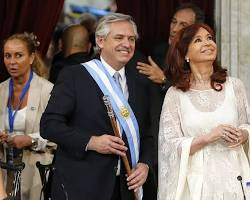
Alberto Fernández ganó las elecciones de 2019 con el 48% de los votos en primera vuelta. Cristina Fernández de Kirchner diseñó la jugada maestra y acopló a todo el peronismo al cederle la presidencia, conformando el "Frente de Todos". Fernández, considerado un operador moderado de diálogo, se presentó como el síntesis para sanar "La Grieta" y gestionar el país quebrado dejado por Macri.
- Actores Sociales: Alianza bifronte entre el aparato territorial del conurbano (CFK, La Cámpora, Intendentes), los sindicatos tradicionales peronistas, y un sector de las clases medias urbanas progresistas que temporalmente apostaron a la moderación de Alberto.
- Mecanismo Político: Lógica de loteo o "coalición trabada": los ministerios se repartieron como feudos entre distintas facciones internas (albertismo, kirchnerismo y massismo), bloqueando sistemáticamente la toma de grandes decisiones por falta de mando unificado (verticalismo roto).
Apenas meses tras asumir de espaldas a una enorme deuda, en marzo de 2020 impactó la inédita pandemia de COVID-19. Argentina impuso el Aislamiento Social, Preventivo y Obligatorio (ASPO), una de las cuarentenas más rígidas y largas a nivel mundial que temporalmente unió al arco político pero destrozó al sector informal, derrumbando el PBI histórico un 9,9%.
La precaria autoridad de Fernández, ya limada por la crisis, fue aniquilada moralmente por el "Olivosgate" (fiesta clandestina del presidente en la residencia de Olivos mientras los ciudadanos no podían velar a sus muertos) y el "Vacunatorio VIP". Hacia 2022, las disidencias públicas de CFK contra el propio gobierno estallaron (desaprobando el acuerdo con el FMI), quebrando la coalición y cediendo el manejo de facto del ministerio económico a Sergio Massa, quien no logró contener la hiperinflación inminente antes de perder holgadamente ante Javier Milei.
La gestión macroeconómica del Frente de Todos representó un agónico "Plan Llegar", atrapada entre fuego a tres bandas: la pandemia global sin acceso a crédito, la guerra de Ucrania (que encareció la importación de energía y vació las reservas), y una histórica sequía agropecuaria (2022-2023) que privó al Estado de un cuarto de las exportaciones.
En este escenario dantesco exacerbado por el veto cruzado de CFK, el gobierno de Fernández validó y refinanció el monumental salvataje de Macri firmando un nuevo acuerdo con el FMI (marzo 2022), conducido por el ministro Martín Guzmán. Este hálito fue ineficaz: el país fue incumpliendo todas las metas pactadas y sostuvo los engranajes estatales recurriendo al financiamiento del Tesoro e indexación por Letras (abuso de la emisión endógena del peso).
La falta crítica de dólares endureció el "Cepo" a niveles asfixiantes (múltiples tipos de cambio bizarros). Bajo la tutela de emergencia del súper-ministro Sergio Massa, en agosto de 2023 se aplicó un salto devaluatorio forzado post-PASO de 20%, desatando la estampida directa a precios. Alberto entregó en diciembre de 2023 una economía envuelta en una espiral nominal hiperinflacionaria (211% anual, récord en 33 años) y el Banco Central rigurosamente quebrado comercialmente.
Continuidades y Rupturas Políticas
Rupturas: Quiebre de la figura de la
Autoridad Presidencial unipersonal peronista (bicefalía y atomización ejecutiva); la pandemia trastocó
abruptamente los paradigmas sociológicos y laborales (teletrabajo,
escolaridad).
Continuidades: Continuidad trágica y ampliación de la subordinación
macroeconómica cíclica a las auditorías foráneas bimensuales del FMI establecidas durante el macrismo (fines
de 2018).
El gobierno de Alberto Fernández es aún muy reciente para que exista historiografía consolidada, pero sí hay análisis políticos y económicos que permiten identificar los ejes del debate.
El gobierno enfrentó la peor pandemia del siglo y una herencia de deuda impagable. La reestructuración de la deuda con privados fue un logro técnico importante. El crecimiento de 2021-2022 fue real. Las limitaciones fueron externas e impuestas por el FMI, no por voluntad propia.
La gestión de la pandemia fue excesivamente restrictiva y generó daños económicos y educativos desproporcionados. La inflación fue consecuencia directa de la emisión monetaria para financiar el gasto. Los escándalos internos (Olivosgate) erosionaron la credibilidad. El gobierno dejó el país con la inflación más alta en décadas.
Javier Milei
La irrupción libertaria, el ajuste más drástico de la historia moderna y la estabilización macroeconómica
El economista televisivo Javier Milei irrumpió como un huracán en la política argentina de la mano de su novel partido "La Libertad Avanza" (LLA). Tras desplazar a la coalición macrista tradicional al tercer puesto, triunfó en el ballotage de noviembre de 2023 derrotando al oficialismo (Sergio Massa) con el 55,6% de los votos. Se convirtió así en el primer presidente "anarco-capitalista" en funciones del mundo.
- Actores Sociales: Alianza disruptiva entre la juventud (mayoritariamente masculina y precarizada laboralmente) hastiada de la devaluación constante, sectores empresariales pro-desregulación y grandes fondos financieros, más el acople del votante anti-peronista histórico de Juntos por el Cambio en la segunda vuelta.
- Mecanismo Político: Batalla cultural constante vía redes sociales (algoritmos, X/Twitter, TikTok), confrontación polarizante contra lo que denominó "La Casta" (políticos tradicionales, periodistas, artistas estatales) y el ejercicio del poder mediante la delegación de facultades hiper-ejecutivas a su estrecho círculo de confianza (su hermana Karina Milei).
Asumió en minoría parlamentaria absoluta (apenas 38 diputados de 257). Sin embargo, avanzó frontalmente mediante el mega-DNU 70/2023 (desregulación total de alquileres, prepagas y cielos) y forzó la aprobación de la sanción de la "Ley Bases" a mediados de 2024, diseñando el andamiaje legal para privatizar empresas públicas e impulsar el Régimen de Incentivo a las Grandes Inversiones (RIGI).
Su programa de Shock Macroprudencial fue encomendado a Luis Caputo, ex ministro de Macri. Su objetivo primario no fue el crecimiento (deliberadamente provocó una brutal recesión para enfriar la demanda), sino exterminar la inflación de raíz ("secando la plaza de pesos"). Aplicó el mayor ajuste del gasto fiscal global contemporáneo (cerca de 5 puntos del PBI de un hachazo): parálisis absoluta de la obra pública federal, licuación de los haberes jubilatorios, despido masivo de empleados y cierre de dependencias estatales (Télam, INADI).
El ancla del programa fue mantener un estricto Superávit Fiscal (Déficit Cero) innegociable, combinado con una furibunda devaluación inicial del 118% bajo promesa de crawling peg (minidevaluaciones) al 2%. La estrategia logró un éxito indudable en su meta financiera primaria: la inflación mayorista colapsó del 54% (diciembre 2023) a niveles de 1 dígito en cuestión de meses, restableciendo un naciente crédito en el mercado exterior y frenando la inminente espiralización hiperinflacionaria legada.
Análisis Social: El fenomenal éxito de la macroeconomía de planillas se pagó con sangre en la microeconomía urbana; el primer semestre de 2024 elevó estadísticamente la Pobreza Nacional al salto inédito del 52,9% (sumergiendo a toda la clase media-baja en la indigencia), generando un dilema ético/político sobre el límite de tolerancia social al shock austero.
Continuidades y Rupturas Estructurales
Rupturas: Fin del consenso de la
centralidad del Estado en el pacto democrático instaurado en 1983; repudio activo e institucional de todo
relato de los Derechos Humanos ("Curro de los DD.HH."); quiebre histórico de la política exterior de
neutralidad (alineamiento mesiánico total con USA/Israel).
Continuidades: Paradójica
continuidad en la dependencia del equipo macroeconómico "ortodoxo" macrista de 2018 (Caputo/Sturzenegger), e
idéntica dificultad histórica para consolidar aperturas de "Cepos" por la escasez física persistente de
dólares industriales en las reservas.
El ajuste de Milei logró resultados macroeconómicos en plazos insólitamente cortos, pero con un costo social real y verificable. El debate central no es si la inflación bajó —bajó—, sino si el modelo de ajuste era el único posible y si sus costos distributivos eran inevitables o eran consecuencia de opciones políticas específicas sobre quién pagaba el ajuste.
Fundamento: Argumenta que Milei es el único líder en evitar honestamente el populismo en
la historia nacional (enfrentando genuinamente a los aparatos extorsivos, sindicales y piqueteros).
Enfatizan que "el ajuste a la casta" (la motosierra sobre políticos, intermediarios y asesores inútiles)
es la base moral de un nuevo país que al fin decidió curarse del déficit fiscal y vivir solamente de lo
que produce abriéndose al comercio libre, señalando que la pobreza del 52% es heredada como
"sinceramiento" de las pésimas tarifas y dólares truchos del massismo.
Limitaciones:
Minimiza casi absolutamente por dogma ideológico que el Shock dependió fundamentalmente de la
licuación cruel (frenazo nominal) de ingresos reales de los jubilados de la base de la pirámide (que
pagaron el déficit cero con su poder adquisitivo en farmacias) y no exclusivamente del recorte o
"motosierra" sobre la élite funcionaria.
Fundamento: Advierte que el modelo "Anarco-Capitalista" no es un experimento libertario
puro, sino una vieja transferencia brutal de ingresos hacia el capital cartelizado financiero
agroexportador y minero (vía el RIGI). Sostienen que el "Superávit Fiscal" es en realidad falso e
inconsistente, construido sobre la retención ilegal (default interno) de deuda exigible o paralización
total de presupuestos universitarios, científicos federales vitales, y el desguace destructivo del "Estado
Nación".
Limitaciones: Sufre actualmente la severa ceguera epistemológica (como
herederos de las últimas 3 gestiones peronistas sumergidas en la inoperancia inflacionaria) de no aceptar
que el electorado prefirió conscientemente atravesar un proceso masoquista de sufrimiento y ajuste por
hartazgo absoluto, antes que dar un paso más dentro del desorden rentístico previo ("El modelo agotado de
la dádiva").
La figura de Milei marca el actual "tiempo cero" de la política argentina (2024+). Todo el ecosistema intelectual y mediático debate frenéticamente si su modelo representa (a) la modernización definitiva y dolorosa del país para ingresar al siglo XXI, o si constituye (b) un experimento utópico de laboratorio neoliberal fanatizado que culminará indefectiblemente en un nuevo "colapso del 2001" al asfixiar insosteniblemente los bordes del pacto de convivencia social democrático.
Mitos y Conclusiones
Lo que la historia desmiente y los patrones que se repiten a lo largo de 140 años
La historia argentina del siglo XX y principios del XXI es, en esencia, la historia de una puja distributiva nunca resuelta, una fragilidad institucional recurrente y una economía que no logra superar su dependencia estructural de las materias primas. Entender sus mitos es fundamental para no repetirlos.
"Antes de 1930 Argentina era una potencia mundial"
El PBI per cápita era elevado para la época, pero ese indicador ocultaba una desigualdad extrema, concentración de la tierra en pocas manos y ausencia total de industria básica. Era prosperidad dependiente de los precios internacionales y del capital extranjero. Un shock externo —como el de 1929— bastaba para derrumbarla. La "potencia" no tenía fundamentos propios.
"El peronismo inventó la inflación argentina"
La inflación de dos dígitos comenzó en 1949, pero las crisis hiperinflacionarias ocurrieron décadas después: la de 1989 fue bajo Alfonsín (radical), la de 1990 bajo Menem. La inflación del 211% de 2023 fue bajo Fernández. La inflación es un fenómeno estructural ligado al conflicto distributivo, el déficit fiscal y la emisión monetaria, presente en gobiernos de todos los signos políticos.
"La dictadura fue una guerra entre dos terrorismos iguales"
La "teoría de los dos demonios" fue desacreditada por la investigación histórica. El Estado implementó un plan sistemático y masivo de exterminio —con presupuesto, jerarquía y coordinación estatal— que no puede equipararse en escala con la acción de organizaciones guerrilleras previas. Los juicios, que continúan hasta hoy, lo confirman permanentemente.
"La crisis de 2001 fue solo consecuencia de la corrupción"
La corrupción existió, pero la crisis tuvo causas estructurales más profundas: un tipo de cambio sobrevaluado que destruyó la competitividad, una deuda en moneda extranjera insostenible, y el ajuste procíclico del FMI en plena recesión. Reducirla a la corrupción es una simplificación que impide aprender las lecciones económicas reales del período.
"El kirchnerismo destruyó la economía que Macri recibió sana"
Cuando Macri asumió en 2015, había problemas serios (inflación, cepo, déficit fiscal), pero la deuda externa era relativamente baja y la economía tenía fundamentos. Macri entregó el poder en 2019 con una deuda que había crecido un 163%, el FMI involucrado por primera vez desde 2001, una recesión de dos años y la pobreza subida del 35% al 53%. El relato de "la herencia recibida" siempre oscurece más de lo que ilumina.
"Milei es un fenómeno sin precedentes en Argentina"
La irrupción de outsiders que canalizan el descontento con la "clase política" tiene antecedentes en la historia argentina y en toda América Latina. Lo novedoso en Milei es la coherencia ideológica extrema (anarcocapitalismo académico), su origen en el mundo de los medios y las redes sociales, y la profundidad del ajuste que logró implementar en democracia. El fenómeno tiene raíces en el agotamiento acumulado de décadas de promesas incumplidas.
"La Campaña del Desierto fue necesaria para civilizar territorios vacíos"
La Patagonia y las llanuras pampeanas no estaban vacías: eran habitadas por sociedades complejas —mapuches, tehuelches, ranqueles— con estructuras políticas, económicas y culturales propias. El término "desierto" era una construcción ideológica para justificar la expropiación. La investigación histórica contemporánea documenta que fue un proceso de conquista territorial en beneficio de una élite terrateniente que concentró millones de hectáreas en pocas manos.
Hitos y Constantes Históricas
A lo largo de 140 años, la trayectoria argentina revela patrones estructurales que trascienden los signos políticos:
- El Péndulo Económico: Alternancia recurrente entre modelos de apertura liberal y proteccionismo estatista, sin lograr una síntesis de desarrollo estable.
- Restricción Externa: La histórica dificultad para generar los dólares necesarios para sostener el crecimiento industrial y el consumo, derivando en crisis de balanza de pagos.
- Puja Distributiva: Un conflicto crónico por el reparto del excedente económico que suele resolverse mediante inflación o devaluación selectiva.
- Fragilidad Institucional: La tendencia a la personalización del poder y la debilidad de las reglas de juego a largo plazo.
Conclusiones Analíticas
El estudio de la historia política nacional permite extraer lecciones fundamentales para el presente:
- La Democracia como Logro: La continuidad institucional desde 1983 representa el acuerdo civil más sólido y valorado de la sociedad contemporánea.
- Deuda Social Pendiente: A pesar de los ciclos de crecimiento, la pobreza estructural ha crecido de forma inercial en las últimas cuatro décadas.
- Necesidad de Consensos: El desarrollo sostenible requiere de acuerdos mínimos sobre política exterior, educación y matriz productiva que sobrevivan a los cambios de gobierno.
- Memoria, Verdad y Justicia: El consenso sobre el Nunca Más constituye un pilar ético innegociable de la identidad nacional moderna.
Protagonistas de la Historia
Retratos de los líderes, pensadores y colectivos que moldearon la trayectoria nacional.
Gran Desafío de Historia Argentina
Poné a prueba tu conocimiento acumulado. Este examen final abarca desde la consolidación del Estado Nacional hasta la actualidad, cruzando política, economía y sociedad.